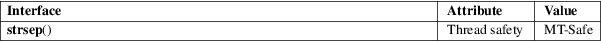

strsep − extract token from string
Standard C library (libc, −lc)
#include <string.h>
char *strsep(char **restrict stringp, const char *restrict delim);
Feature Test Macro Requirements for glibc (see feature_test_macros(7)):
strsep():
Since glibc 2.19:
_DEFAULT_SOURCE
glibc 2.19 and earlier:
_BSD_SOURCE
If *stringp is NULL, the strsep() function returns NULL and does nothing else. Otherwise, this function finds the first token in the string *stringp that is delimited by one of the bytes in the string delim. This token is terminated by overwriting the delimiter with a null byte ('\0'), and *stringp is updated to point past the token. In case no delimiter was found, the token is taken to be the entire string *stringp, and *stringp is made NULL.
The strsep() function returns a pointer to the token, that is, it returns the original value of *stringp.
For an explanation of the terms used in this section, see attributes(7).

None.
4.4BSD.
The strsep() function was introduced as a replacement for strtok(3), since the latter cannot handle empty fields. However, strtok(3) conforms to C89/C99 and hence is more portable.
Be cautious when using this function. If you do use it, note that:
|
• |
This function modifies its first argument. |
|||
|
• |
This function cannot be used on constant strings. |
|||
|
• |
The identity of the delimiting character is lost. |
The program below is a port of the one found in strtok(3), which, however, doesn’t discard multiple delimiters or empty tokens:
$ ./a.out
'a/bbb///cc;xxx:yyy:' ':;' '/'
1: a/bbb///cc
−−> a
−−> bbb
−−>
−−>
−−> cc
2: xxx
−−> xxx
3: yyy
−−> yyy
4:
−−>
Program
source
#include <stdio.h>
#include <stdlib.h>
#include <string.h>
int
main(int argc, char *argv[])
{
char *token, *subtoken;
if (argc != 4)
{
fprintf(stderr, "Usage: %s string delim
subdelim\n", argv[0]);
exit(EXIT_FAILURE);
}
for (unsigned
int j = 1; (token = strsep(&argv[1], argv[2])); j++) {
printf("%u: %s\n", j, token);
while
((subtoken = strsep(&token, argv[3])))
printf("\t −−> %s\n", subtoken);
}
exit(EXIT_SUCCESS);
}
memchr(3), strchr(3), string(3), strpbrk(3), strspn(3), strstr(3), strtok(3)